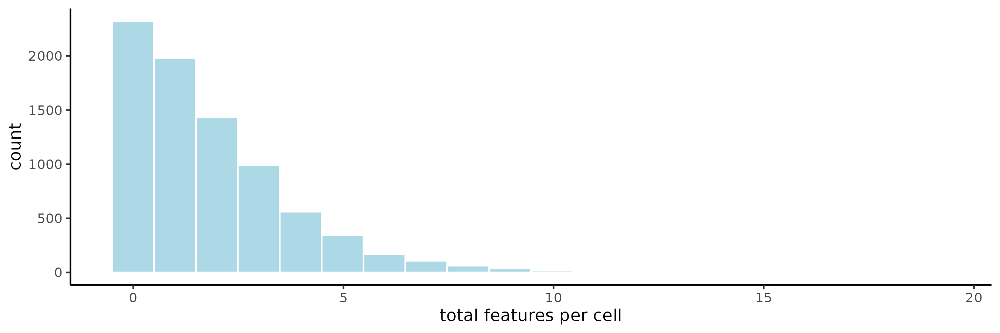

Nanostring CosMx Subcellular Lung Cancer
2022-11-30
Source:vignettes/nanostring_cosmx_lung_cancer.Rmd
nanostring_cosmx_lung_cancer.RmdThis example uses subcellular data from Nanostring’s CosMx Spatial Molecular Imager. This publicly available dataset is from an FFPE sample of non-small-cell lung cancer (NSCLC). This example works with Lung12.
# Ensure Giotto Suite is installed.
if(!"Giotto" %in% installed.packages()) {
devtools::install_github("drieslab/Giotto@suite")
}
library(Giotto)
# Ensure the Python environment for Giotto has been installed.
genv_exists = checkGiottoEnvironment()
if(!genv_exists){
# The following command need only be run once to install the Giotto environment.
installGiottoEnvironment()
}1. Setup
# Custom color palettes from rcartocolor
# pal10 = rcartocolor::carto_pal(n = 10, name = 'Pastel')
pal10 = c("#66C5CC","#F6CF71","#F89C74","#DCB0F2","#87C55F",
"#9EB9F3","#FE88B1","#C9DB74","#8BE0A4","#B3B3B3")
# viv10 = rcartocolor::carto_pal(n = 10, name = 'Vivid')
viv10 = c("#E58606","#5D69B1","#52BCA3","#99C945","#CC61B0",
"#24796C","#DAA51B","#2F8AC4","#764E9F","#A5AA99")
# set working directory
results_folder = '/path/to/directory'
# Optional: Specify a path to a Python executable within a conda or miniconda
# environment. If set to NULL (default), the Python executable within the previously
# installed Giotto environment will be used.
my_python_path = NULL # alternatively, "/local/python/path/python" if desired.
## Set object behavior
# by directly saving plots, but not rendering them you will save a lot of time
instrs = createGiottoInstructions(save_dir = results_folder,
save_plot = TRUE,
show_plot = FALSE,
return_plot = FALSE,
python_path = my_python_path)1.1 CosMx Project loading function
Convenience function for loading in the CosMx data. It loads
subcellular transcript information and polygons and generates a
giotto object with giottoPoints objects for
both ‘rna’ and ‘neg_probe’ nested in the gobject feat_info
slot, and a giottoPolygon object for the ‘cell’ spatial
unit in the spatial_info slot.
This function performs the manual object creation steps described below. To skip those steps and preliminary data exploration, go to Section 5.
Additionally, a comparison of the count matrix produced through the convenience function ‘subcellular’ workflow and Nanostring’s provided matrix can be found at Section 6.4.
## provide path to nanostring folder
data_path = '/path/to/data/Lung12-Flat_files_and_images/'
## create giotto cosmx object
fov_join = createGiottoCosMxObject(cosmx_dir = data_path,
data_to_use = 'subcellular', # only subcellular
FOVs = c(2,3,4),
instructions = instrs)
showGiottoFeatInfo(fov_join)
showGiottoSpatialInfo(fov_join)2. Data exploration and loading
2.1 Subcellular detections (points info)
tx_file.csv contains the subcellular detections
information. It contains information on each of the individual feature
detections within the sample.
- fov which FOV the detection happened in
- cell_ID the ID of the cell the detection happened in
- x_global_px the global spatial x location in pixels
- y_global_px the global spatial y location in pixels
- x_local_px the spatial x location in pixels within the FOV
- y_local_px the spatial y location in pixels within the FOV
- z the z plane the detection was called in (-1 to 16)
- target the feature the probe is targeted against
- CellComp Cellular compartment the detection happened in (0, Cytoplasm, Membrane, Nuclear)
## provide path to nanostring folder
data_path = '/path/to/data/Lung12-Flat_files_and_images/'
# load transcript coordinates
tx_coord_all = data.table::fread(paste0(data_path, 'Lung12_tx_file.csv'))
colnames(tx_coord_all)
cat('\n')
# z planes
tx_coord_all[, table(z)]
cat('\n')
# Cell compartment
tx_coord_all[, table(CellComp)]
# [1] "fov" "cell_ID" "x_global_px" "y_global_px"
# [5] "x_local_px" "y_local_px" "z" "target"
# [9] "CellComp"
#
# z
# -1 0 1 2 3 4 5 6
# 23723 3466178 2522315 2694973 2686531 2648926 2660346 2711105
# 7 8 9 10 11 12 13 14
# 2855259 3700831 36840 6594 6466 6787 6944 6959
# 15 16
# 17603 2
#
# CellComp
# 0 Cytoplasm Membrane Nuclear
# 6619744 5770549 3368411 102996782.2 Split detections by features vs negative probes
tx_file.csv contains information on both actual features
(960 targeted gene probes in this dataset) and negative probes (20) that
are targeted to alien sequences defined by the External RNA Controls
Consortium (ERCC) that do not exist in human tissue. These two types of
detections will be treated as separate feature types
(feat_type) and placed in separate expression matrices.
all_IDs = tx_coord_all[, unique(target)]
# negative probe IDs
neg_IDs = all_IDs[grepl(pattern = 'NegPrb', all_IDs)]
cat('Negative Probe IDs\n')
neg_IDs
cat('\nFeature IDs\n')
feat_IDs = all_IDs[!all_IDs %in% neg_IDs]
length(feat_IDs)
# split detections
feat_coords_all = tx_coord_all[target %in% feat_IDs]
neg_coords_all = tx_coord_all[target %in% neg_IDs]
cat('\nFeatures: ', feat_coords_all[, .N], '\n',
'NegProbes: ', neg_coords_all[, .N])
# Negative Probe IDs
# [1] "NegPrb15" "NegPrb18" "NegPrb7" "NegPrb21" "NegPrb13"
# [6] "NegPrb10" "NegPrb11" "NegPrb9" "NegPrb3" "NegPrb16"
# [11] "NegPrb23" "NegPrb14" "NegPrb20" "NegPrb8" "NegPrb19"
# [16] "NegPrb6" "NegPrb5" "NegPrb12" "NegPrb17" "NegPrb22"
#
# Number of feature IDs
# [1] 960
#
# Features: 25875734
# NegProbes: 182648
# [1] "IL7R" "SEC61G" "IGHA1" "CD164" "IL6"
# [6] "CCR2" "KRT86" "NEAT1" "NLRP1" "S100A10"
# [11] "KRT80" "MYH11" "OLR1" "FYN" "NR1H4"
# [16] "NDRG1" "AGR2" "FGR" "NFKB1" "IL4R"
# [21] "VWF" "EOMES" "COL16A1" "IL1RL1" "ITGAL"
# [26] "GLUD1" "STAT3" "MAPK14" "VHL" "CD44"
# [31] "RAMP1" "ZFP36" "CD27" "GDF15" "EPCAM"
# [36] "LAMP3" "LTB" "COL12A1" "LGALS9" "HLA-DQB1"
# [41] "CLU" "ALCAM" "TLR7" "FGF1" "NR1H3"
# [46] "TNFSF18" "EIF5A" "LGALS3" "CD63" "FOXP3"
# [51] "DCN" "CUZD1" "LIF" "BMP6" "HCST"
# [56] "VSIR" "STAT1" "GDNF" "UBE2C" "APOA1"
# [61] "ADGRF1" "PDGFC" "IL17A" "YES1" "TGFBR2"
# [66] "GPX3" "IFIH1" "SOX9" "MX1" "IGKC"
# [71] "CD8A" "PTGES3" "KRAS" "CRYAB" "ACTA2"
# [76] "EGF" "CD5L" "BCL2L1" "SRGN" "FGFR3"
# [81] "CD53" "CELSR2" "MTRNR2L1" "LAMP2" "LAIR1"
# [86] "FGF13" "EFNA1" "CLEC2B" "FZD5" "SYK"
# [91] "FES" "MZT2A" "SERPINA1" "HIF1A" "JUN"
# [96] "THBS1" "CHEK2" "CD274" "CXCL3" "IL11"
# [101] "GPX1" "FASLG" "EPHA2" "TGFB3" "RARG"
# [106] "CLDN4" "G6PC2" "KITLG" "ADGRG3" "RPL34"
# [111] "HLA-A" "ESAM" "HDAC1" "MGP" "MECOM"
# [116] "MRC2" "ACE2" "COL4A2" "CDH1" "ATG10"
# [121] "IL32" "SERPINA3" "SRC" "IGFBP6" "IER3"
# [126] "QRFPR" "CD276" "ITGA9" "INHBA" "CXCL1"
# [131] "ATG12" "ERBB2" "FCRLA" "TIE1" "EFNB1"
# [136] "IGHG2" "FZD3" "SAA1" "CCL23" "JUNB"
# [141] "COTL1" "CSF1R" "TNFAIP6" "KIT" "RSPO1"
# [146] "RARB" "CXCR4" "CD28" "FGFR2" "RGS1"
# [151] "ACVR2A" "CD3G" "ADORA2A" "IGFBP3" "NOD2"
# [156] "KRT1" "LPAR5" "CD36" "ACKR3" "CCL3"
# [161] "CD48" "TYK2" "TGFB1" "CD2" "CTSG"
# [166] "CFLAR" "IDO1" "TIMP1" "TGFBR1" "BTK"
# [171] "BMP7" "HSPB1" "GDF10" "CD37" "ADIPOQ"
# [176] "WNT5A" "TAP1" "CRIP1" "ATF3" "PTHLH"
# [181] "ITGA3" "CD3E" "TGFB2" "HLA-DRA" "TLR8"
# [186] "ADGRG5" "ITGAE" "MKI67" "EPHA4" "CSF3"
# [191] "BMP3" "COL6A1" "IL1RN" "CCR7" "CD19"
# [196] "VCAN" "FAS" "WNT7A" "FCGBP" "IL18R1"
# [201] "EPHB4" "TYROBP" "KRT14" "TACSTD2" "PF4"
# [206] "JCHAIN" "WIF1" "ANXA2" "CYSTM1" "RPL32"
# [211] "KRT13" "CFD" "COL14A1" "STMN1" "CCL4"
# [216] "PTGS2" "SUCNR1" "RAD51" "THBS2" "KDR"
# [221] "SCGB3A1" "CENPF" "CD52" "ROR1" "GZMA"
# [226] "HCAR2" "CSF3R" "IL10RB" "CXCL2" "GZMH"
# [231] "PECAM1" "CCL2" "DUSP5" "SLC40A1" "PTGDR2"
# [236] "ITGB8" "SAT1" "S100A6" "IFNB1" "IGFBP7"
# [241] "TCL1A" "S100P" "DST" "IFI27" "H4C3"
# [246] "MMP16" "CX3CL1" "CALM3" "DUSP6" "IL36G"
# [251] "COL6A2" "SOX4" "TNFRSF10B" "CCL19" "KRT19"
# [256] "ACE" "TPM2" "FGF9" "COL1A2" "RAC1"
# [261] "RPL21" "IL15RA" "HMGN2" "VEGFA" "CDKN1A"
# [266] "COL18A1" "IGF1" "SLPI" "FLT1" "CD9"
# [271] "KRT5" "TNFRSF12A" "MIF" "YBX3" "S100A4"
# [276] "HPGDS" "INHA" "IGHG1" "CLEC12A" "NPPC"
# [281] "KRT8" "IFNL2" "TPSAB1" "ATR" "SMAD3"
# [286] "TUBB" "KRT7" "TBX21" "CTNNB1" "IRF4"
# [291] "DMBT1" "ACKR4" "SPARCL1" "POU5F1" "IRF3"
# [296] "MMP7" "RXRA" "TNFRSF11B" "IL12A" "DDR1"
# [301] "IL1RAP" "ITGAM" "DDIT3" "TWIST1" "NLRP2"
# [306] "LDLR" "CXCL10" "SAA2" "KRT23" "CAV1"
# [311] "IL1A" "B2M" "ELANE" "TEK" "ITGAV"
# [316] "FKBP11" "ICAM3" "TNFSF10" "ERBB3" "ADGRG6"
# [321] "CD80" "CPA3" "CTSW" "MAML2" "PHLDA2"
# [326] "LIFR" "IL13RA1" "HILPDA" "KLF2" "EPHA7"
# [331] "IL18" "COL1A1" "GLUL" "DDR2" "TM4SF1"
# [336] "KRT6C" "COL5A2" "CLEC10A" "CSHL1" "IL2RB"
# [341] "TPSB2" "ITK" "C1QC" "CXCL16" "IFNA1"
# [346] "IFNAR1" "IGF2" "ATG5" "NKG7" "RARRES2"
# [351] "AZU1" "CLEC4A" "GSTP1" "GPBAR1" "TNFRSF1A"
# [356] "IFITM3" "DUSP1" "CCR10" "EPHB2" "ITGA6"
# [361] "CAMP" "CD14" "TXK" "SERPINH1" "NPR3"
# [366] "MTOR" "CRP" "MMP2" "IGF2R" "TAGLN"
# [371] "PSAP" "MS4A1" "MST1R" "KLRK1" "BGN"
# [376] "TNFRSF9" "P2RY12" "PTK2" "IL23A" "RXRB"
# [381] "NOTCH3" "FOXF1" "COL15A1" "SQSTM1" "CCL15"
# [386] "S100A2" "MMP3" "CCL8" "ESR1" "SMARCB1"
# [391] "RGCC" "PPARA" "IL2RA" "SMAD4" "EFNA4"
# [396] "RARRES1" "COL3A1" "ITGB6" "CD74" "ANXA4"
# [401] "SFN" "ARHGDIB" "TNFRSF10A" "VEGFC" "HLA-B"
# [406] "HLA-DRB5" "CD3D" "ITGA1" "ANGPT1" "KRT24"
# [411] "MET" "MALAT1" "HSP90AB1" "ABL2" "LTF"
# [416] "MMP12" "ACKR1" "MERTK" "S100A9" "FZD8"
# [421] "INS" "CD33" "HDAC3" "OSM" "CYP1B1"
# [426] "ITGB2" "CD40LG" "CALD1" "CLOCK" "COL11A1"
# [431] "C9orf16" "IL1B" "CCL11" "FGF18" "BID"
# [436] "MT1X" "KLK3" "CCL28" "RAMP3" "OXER1"
# [441] "IL3RA" "ADGRB3" "FASN" "MMP8" "ITGA2"
# [446] "CCL5" "MRC1" "IGFBP5" "PPARG" "G6PD"
# [451] "CCND1" "TLR2" "RAMP2" "PTPRC" "BIRC5"
# [456] "ITM2A" "IL11RA" "STAT5A" "COL27A1" "PPARD"
# [461] "FFAR4" "ADGRE5" "FGF7" "MMP14" "MZB1"
# [466] "NOSIP" "TNFRSF19" "ADGRL2" "FABP5" "IFNGR1"
# [471] "VTN" "FCER1G" "CASP8" "ITGB1" "SOX2"
# [476] "GNLY" "CCRL2" "RSPO3" "IGF1R" "NOTCH2"
# [481] "IL10RA" "TWIST2" "LMNA" "LCN2" "PSCA"
# [486] "ADGRG2" "AKT1" "SPRY4" "SELL" "PDGFD"
# [491] "LYN" "WNT11" "IFNAR2" "TNFRSF14" "OASL"
# [496] "SNAI2" "OLFM4" "CYTOR" "CXCR6" "RARA"
# [501] "RUNX3" "WNT3" "PIGR" "PDCD1" "RGS2"
# [506] "LEFTY2" "TLR5" "CDKN3" "ACVRL1" "FZD4"
# [511] "FGF2" "SMO" "AHR" "SELPLG" "HDAC5"
# [516] "GATA3" "CD81" "PNOC" "PLAC8" "HLA-DPA1"
# [521] "MXRA8" "CXCR1" "SNAI1" "KLRB1" "IFNG"
# [526] "COL17A1" "IL7" "LUM" "MMP1" "IL22RA1"
# [531] "ITGB5" "IL33" "LYZ" "FFAR3" "SOD2"
# [536] "HCK" "CCR1" "UCP1" "WNT10B" "OXGR1"
# [541] "FGG" "BST1" "RELT" "WNT5B" "IL12RB2"
# [546] "DUSP2" "HBB" "CD83" "CLEC2D" "CSF2RB"
# [551] "HDAC11" "IL17RE" "COL5A3" "WNT7B" "TSLP"
# [556] "CALM1" "IL2RG" "CLEC4D" "ADGRL1" "APP"
# [561] "KRT20" "CCL4L2" "CD68" "VIM" "H2AZ1"
# [566] "LINC02446" "BAX" "CD34" "FZD6" "CEACAM6"
# [571] "ST6GALNAC3" "PTGS1" "TNFSF8" "VEGFD" "ADGRF5"
# [576] "HSD3B2" "COL9A2" "KRT16" "PDGFB" "FYB1"
# [581] "CASP3" "BRCA1" "CXCL9" "CLEC1A" "IL20RA"
# [586] "HSPA1B" "LEP" "GCG" "LY6D" "DUSP4"
# [591] "CD59" "EPHA3" "RORA" "WNT2" "ADGRA2"
# [596] "CALM2" "CLEC7A" "HLA-C" "TNFSF4" "TYMS"
# [601] "IFITM1" "MT2A" "SMAD2" "KRT17" "PTK6"
# [606] "OSMR" "CHEK1" "CD79A" "CASR" "SPRY2"
# [611] "IGHM" "S100B" "GDF6" "TNFSF9" "IL34"
# [616] "DLL1" "SPOCK2" "NRXN1" "CSF1" "IL6ST"
# [621] "HDAC4" "TOP2A" "GAS6" "ITGA5" "COL5A1"
# [626] "ST6GAL1" "TNFRSF1B" "EMP3" "TNFRSF13B" "KRT6B"
# [631] "ABL1" "CTLA4" "EPOR" "SLC2A4" "MMP9"
# [636] "IL24" "CHI3L1" "PTGDS" "CD209" "RPL37"
# [641] "CD38" "GPNMB" "STAT5B" "ETS1" "DDC"
# [646] "LGALS1" "KRT18" "MYL9" "EFNB3" "ANXA1"
# [651] "BST2" "COL4A1" "GSN" "CD58" "CD55"
# [656] "PTPRCAP" "VCAM1" "ACVR1" "IL12B" "RB1"
# [661] "C11orf96" "XCL2" "SPINK1" "C1QA" "ITGAX"
# [666] "TNFRSF21" "JAK1" "IL17RB" "IFNL3" "HLA-DQA1"
# [671] "ETV5" "TNFSF12" "TIGIT" "ENTPD1" "RSPO2"
# [676] "ANGPT4" "TLR4" "EPHB3" "ICOSLG" "NRIP3"
# [681] "MARCO" "NLRC4" "CCL13" "CIITA" "OAS1"
# [686] "HBA1" "EFNB2" "HLA-DRB1" "ADGRF3" "TUBB4B"
# [691] "MAF" "TSHZ2" "SPP1" "IL2" "CALB1"
# [696] "CCL7" "ADGRE1" "XCL1" "PDGFRA" "CXCL17"
# [701] "STAT6" "SLC2A1" "COL8A1" "SST" "PTGES"
# [706] "LAG3" "CCL18" "CIDEA" "BMP4" "CXCL8"
# [711] "EGFR" "KRT4" "DNMT3A" "FLT3LG" "HLA-E"
# [716] "FZD7" "OAS3" "COL9A3" "TLR1" "APOD"
# [721] "ICAM2" "PDGFA" "PRF1" "TFEB" "AREG"
# [726] "ARG1" "IL27RA" "TNFRSF10D" "GADD45B" "HSP90AA1"
# [731] "DPP4" "MMP19" "TPM1" "P2RX5" "CST7"
# [736] "BEST1" "MMP10" "CXCR5" "PTTG1" "TOX"
# [741] "CDH11" "MYC" "PDGFRB" "ANGPTL1" "ADGRF4"
# [746] "AHI1" "HLA-DPB1" "TNFRSF11A" "TNFSF15" "AR"
# [751] "IL1R1" "CCL20" "NLRC5" "HAVCR2" "LTBR"
# [756] "GDF3" "TAP2" "INSR" "IL15" "HSD17B2"
# [761] "CD84" "MPO" "SELENOP" "SEC23A" "DHRS2"
# [766] "HSP90B1" "HSPA1A" "BCL2" "XBP1" "RBPJ"
# [771] "EZH2" "MSMB" "EFNA5" "AXL" "NLRP3"
# [776] "FN1" "CD8B" "CXCR2" "CNTFR" "TNFRSF18"
# [781] "COL6A3" "CCR5" "NRG4" "ITGB4" "CSF2"
# [786] "TLR3" "IGHD" "CD70" "INHBB" "MAPK13"
# [791] "MEG3" "PLA2R1" "MAP1LC3B" "PPBP" "IL17D"
# [796] "CD4" "IL20" "IL17B" "KRT15" "RPL22"
# [801] "RYK" "NTRK2" "CCL21" "DDX58" "CD24"
# [806] "IL10" "PARP1" "CD300A" "CDH5" "BTG1"
# [811] "NFKBIA" "PRSS2" "CXCL6" "CSF2RA" "ADGRD1"
# [816] "WNT9A" "ADIRF" "ICOS" "KRT6A" "CD86"
# [821] "C5AR2" "FOS" "SCG5" "IFNGR2" "LGALS3BP"
# [826] "CD69" "RGS5" "BMP2" "BMP5" "RELA"
# [831] "CLCF1" "COL4A5" "BMPR2" "FCGR3A" "REG1A"
# [836] "EZR" "IL12RB1" "RAC2" "C1QB" "RNF43"
# [841] "CLEC4E" "PCNA" "CLEC5A" "FABP4" "PGR"
# [846] "CD163" "ICAM1" "ADGRG1" "HTT" "CD47"
# [851] "AQP3" "OAS2" "GPR183" "LEFTY1" "WNT2B"
# [856] "BMX" "JAG1" "PTGIS" "EPHB6" "NPR2"
# [861] "SREBF1" "CD40" "DNTT" "IL16" "IFIT1"
# [866] "ANGPT2" "PTGES2" "DNMT1" "GZMB" "TSC22D1"
# [871] "HCAR3" "FGF12" "HGF" "BMP1" "ENG"
# [876] "CXCL5" "B3GNT7" "ADM2" "CLEC14A" "ARF1"
# [881] "ACVR1B" "GC" "AATK" "ARTN" "ADGRA3"
# [886] "FFAR2" "TNF" "S100A8" "BATF3" "SIGIRR"
# [891] "VPREB3" "BECN1" "FZD1" "PROK2" "NCR1"
# [896] "IL17RA" "IL1R2" "CPB1" "JAK2" "IL6R"
# [901] "NANOG" "CYP19A1" "NPPB" "PGF" "FPR1"
# [906] "NR1H2" "NRXN3" "NOTCH1" "NR3C1" "KRT10"
# [911] "SERPINB5" "CSK" "ADGRB2" "CELSR1" "GPER1"
# [916] "RPS4Y1" "HMGB2" "BMPR1A" "PDCD1LG2" "TNFRSF4"
# [921] "GZMK" "FGFR1" "GDF9" "SOSTDC1" "TNFSF14"
# [926] "NGFR" "UPK3A" "CCL3L3" "BAG3" "LY75"
# [931] "ADGRL4" "TTR" "NPR1" "VEGFB" "NRG1"
# [936] "AZGP1" "PROKR1" "CXCR3" "STAT4" "ETV4"
# [941] "ATM" "TNFRSF17" "APOB" "ADGRE2" "COL21A1"
# [946] "CX3CR1" "CMKLR1" "MS4A4A" "COL9A1" "TNFSF13B"
# [951] "SOD1" "ACTG2" "TP53" "ADGRV1" "IAPP"
# [956] "CCL26" "CXCL14" "CHGA" "CXCL12" "CEACAM1" 2.2.1 Preview negative probes (optional)
Previewing the probe information can be done by converting to
giottoPoints and then using plot(). Here we
show a preview of the negative probes.
Note: if previewing the rna expression information,
it is highly recommended to set a subset of features using the
feats param. The default is to plot all points, which can
be very slow for large data.
neg_points = createGiottoPoints(
x = neg_coords_all[, .(target, x_global_px, y_global_px)]
)
plot(neg_points, point_size = 0.2, feats = neg_IDs)2.3 FOV shifts
fov_positions_file.csv contains information on the x and
y shifts needed in order to put the FOVs tiles together into a cohesive
whole. This information is needed during the image attachment and
alignment process.
# load field of vision (fov) positions
fov_offset_file = data.table::fread(paste0(data_path, 'Lung12_fov_positions_file.csv'))
# fov x_global_px y_global_px
# 1: 1 -4977.7778 -160233.3
# 2: 2 494.4444 -160233.3
# 3: 3 5966.6667 -160233.3
# 4: 4 11438.8889 -160233.3
# 5: 5 -4977.7778 -156583.3
# 6: 6 494.4444 -156583.3
# 7: 7 5966.6667 -156583.3
# 8: 8 11438.8889 -156583.3
# 9: 9 -4977.7778 -152933.3
# 10: 10 494.4444 -152933.3
# 11: 11 5966.6667 -152933.3
# 12: 12 11438.8889 -152933.3
# 13: 13 -4977.7778 -149283.3
# 14: 14 494.4444 -149283.3
# 15: 15 5966.6667 -149283.3
# 16: 16 11438.8889 -149283.3
# 17: 17 -4977.7778 -145633.3
# 18: 18 494.4444 -145633.3
# 19: 19 5966.6667 -145633.3
# 20: 20 11438.8889 -145633.3
# 21: 21 -4977.7778 -141983.3
# 22: 22 494.4444 -141983.3
# 23: 23 5966.6667 -141983.3
# 24: 24 11438.8889 -141983.3
# 25: 25 -4977.7778 -138333.3
# 26: 26 494.4444 -138333.3
# 27: 27 5966.6667 -138333.3
# 28: 28 11438.8889 -138333.3
# fov x_global_px y_global_px2.4 Choose field of view for analysis
CosMx data is large and Giotto loads in the subcellular information by FOV. This dataset includes 28 FOVs which can be difficult for most computers to handle at once.
This tutorial will use FOVs ‘02’, ‘03’, and ‘04’ which correspond to the 3 FOVs visible on the bottom right in the negative probe preview above.
3. Create a Giotto Object for each FOV
for(fov_i in 1:length(id_set)) {
fov_id = id_set[fov_i]
# 1. original composite image as png
original_composite_image = paste0(data_path, 'CellComposite/CellComposite_F0', fov_id,'.jpg')
# 2. input cell segmentation as mask file
segmentation_mask = paste0(data_path, 'CellLabels/CellLabels_F0', fov_id, '.tif')
# 3. input features coordinates + offset
feat_coord = feat_coords_all[fov == as.numeric(fov_id)]
neg_coord = neg_coords_all[fov == as.numeric(fov_id)]
feat_coord = feat_coord[,.(x_local_px, y_local_px, z, target)]
neg_coord = neg_coord[,.(x_local_px, y_local_px, z, target)]
colnames(feat_coord) = c('x', 'y', 'z', 'gene_id')
colnames(neg_coord) = c('x', 'y', 'z', 'gene_id')
feat_coord = feat_coord[,.(x, y, gene_id)]
neg_coord = neg_coord[,.(x, y, gene_id)]
fovsubset = createGiottoObjectSubcellular(
gpoints = list('rna' = feat_coord,
'neg_probe' = neg_coord),
gpolygons = list('cell' = segmentation_mask),
polygon_mask_list_params = list(
mask_method = 'guess',
flip_vertical = TRUE,
flip_horizontal = FALSE,
shift_horizontal_step = FALSE
),
instructions = instrs
)
# cell centroids are now used to provide the spatial locations
fovsubset = addSpatialCentroidLocations(fovsubset,
poly_info = 'cell')
# create and add Giotto images
composite = createGiottoLargeImage(raster_object = original_composite_image,
negative_y = FALSE,
name = 'composite')
fovsubset = addGiottoImage(gobject = fovsubset,
largeImages = list(composite))
fovsubset = convertGiottoLargeImageToMG(giottoLargeImage = composite,
#mg_name = 'composite',
gobject = fovsubset,
return_gobject = TRUE)
gobjects_list[[fov_i]] = fovsubset
}4. Join FOV Giotto Objects
new_names = paste0("fov0", id_set)
id_match = match(as.numeric(id_set), fov_offset_file$fov)
x_shifts = fov_offset_file[id_match]$x_global_px
y_shifts = fov_offset_file[id_match]$y_global_px
# Create Giotto object that includes all selected FOVs
fov_join = joinGiottoObjects(gobject_list = gobjects_list,
gobject_names = new_names,
join_method = 'shift',
x_shift = x_shifts,
y_shift = y_shifts)5. Visualize Cells and Genes of Interest
When plotting subcellular data, Giotto uses the
spatInSituPlot functions. Spatial plots showing the feature
points and polygons are plotted using
spatInSituPlotPoints().
showGiottoImageNames(fov_join)
# Set up vector of image names
id_set = c('02', '03', '04')
new_names = paste0("fov0", id_set)
image_names = paste0(new_names, '-image')
spatInSituPlotPoints(fov_join,
show_image = TRUE,
image_name = image_names,
feats = list('rna' = c('MMP2', 'VEGFA', 'IGF1R',
'MKI67', 'EPCAM', 'KRT8')),
feats_color_code = viv10,
spat_unit = 'cell',
point_size = 0.01,
show_polygon = TRUE,
use_overlap = FALSE,
polygon_feat_type = 'cell',
polygon_color = 'white',
polygon_line_size = 0.03,
save_param = list(base_height = 3,
save_name = '1_inSituFeats'))5.1 Visualize Cell Centroids
The standard spatPlot2D() function can also be used, but
this works off only the aggregated information that is assembled based
on the subcellular information. Plotting information based on cell
centroids can be done through this function.
spatPlot2D(gobject = fov_join,
image_name = image_names,
show_image = TRUE,
point_shape = 'no_border',
point_size = 0.01,
point_alpha = 0.5,
coord_fix_ratio = 1,
save_param = list(base_height = 2,
save_name = '2_spatCentroids'))6. Aggregate subcellular features
Giotto supports working directly with the subcellular features in
order to generate cell by feature matrices. The data generated this way
is then given the spatial unit 'cell'. This workflow is
recommended over loading the provided cell by feature (aggregated
expression) matrix and then including the subcellular information as
secondary data.
When both the raw subcellular information and the pre-made expression
matrix are loaded in at the same time, the subcellular data and all data
generated from it should be given the spatial unit 'cell'
and the pre-generated aggregated information should be given a different
spatial unit such as 'cell_agg' to differentiate between
the two sources of information.
In this step, we will be aggregating the feature points of
'rna' and 'neg_probe' into the
'cell' spatial unit.
# Find the feature points overlapped by polygons. This overlap information is then
# returned to the relevant giottoPolygon object's overlaps slot.
fov_join = calculateOverlapRaster(fov_join, feat_info = 'rna')
fov_join = calculateOverlapRaster(fov_join, feat_info = 'neg_probe')
# Convert the overlap information into a cell by feature expression matrix which
# is then stored in the Giotto object's expression slot
fov_join = overlapToMatrix(fov_join, feat_info = 'rna')
fov_join = overlapToMatrix(fov_join, feat_info = 'neg_probe')
showGiottoExpression(fov_join)
# └──Spatial unit "cell"
# ├──Feature type "rna"
# │ └──Expression data "raw" values:
# │ An object of class exprObj
# │ for spatial unit: "cell" and feature type: "rna"
# │ Provenance: cell
# │
# │ contains:
# │ 960 x 8066 sparse Matrix of class "dgCMatrix"
# │
# │ LY6D . . 1 . . . . . . . . . . ......
# │ IGHA1 . . . . . . . 2 . 1 . . . ......
# │ VWF . . . 1 . . . . . 1 . . . ......
# │
# │ ........suppressing 8053 columns and 954 rows
# │
# │ CLEC2D 1 . . . . . . . . 1 . . . ......
# │ MARCO . . . . . . . . . . . . . ......
# │ AATK . . . . . . . . . . . . 2 ......
# │
# │ First four colnames:
# │ fov002-cell_1 fov002-cell_2
# │ fov002-cell_3 fov002-cell_4
# │
# └──Feature type "neg_probe"
# └──Expression data "raw" values:
# An object of class exprObj
# for spatial unit: "cell" and feature type: "neg_probe"
# Provenance: cell
#
# contains:
# 20 x 8066 sparse Matrix of class "dgCMatrix"
#
# NegPrb8 . . . . . . . . . . 2 . . ......
# NegPrb10 1 . . . . . . . . . . . 1 ......
# NegPrb20 . . . . . . . . . . . . . ......
#
# ........suppressing 8053 columns and 14 rows
#
# NegPrb18 . . . . . . . . . . . . . ......
# NegPrb12 . . . . . . . . . . . . . ......
# NegPrb15 1 . 1 . . . . . . . . . . ......
#
# First four colnames:
# fov002-cell_1 fov002-cell_2
# fov002-cell_3 fov002-cell_4 6.1 Plot histograms of total counts per cell
filterDistributions(fov_join,
plot_type = 'hist',
detection = 'cells',
method = 'sum',
feat_type = 'rna',
nr_bins = 100,
save_param = list(base_height = 3,
save_name = '3.1_totalexpr'))
filterDistributions(fov_join,
plot_type = 'hist',
detection = 'cells',
method = 'sum',
feat_type = 'neg_probe',
nr_bins = 25,
save_param = list(base_height = 3,
save_name = '3.2_totalnegprbe'))RNA
Negative Probes
6.2 2D Density Plots
Density-based representations may sometimes be preferred instead of
viewing the raw points information, especially when points are dense
enough that there is overplotting. After overlaps information has been
calculated, spatInSituPlotDensity() can be used in order to
get a general idea of how much expression there is of a feature.
spatInSituPlotDensity(gobject = fov_join,
feats = c("MMP2", "VEGFA", "IGF1R",
'MKI67', 'EPCAM', 'KRT8'),
cow_n_col = 2,
save_param = list(base_height = 4,
save_name = '4_inSituDens'))6.3 Extract Data from Giotto Object
# combine cell data
morphometa = combineCellData(fov_join,
feat_type = 'rna')
# combine feature data
featmeta = combineFeatureData(fov_join,
feat_type = c('rna'))
# combine overlapping feature data
featoverlapmeta = combineFeatureOverlapData(fov_join,
feat_type = c('rna'))
# $rna
# cell_ID sdimx sdimy geom part x y hole list_ID feat
# 1: fov002-cell_1 1025.82 -156627.0 1 1 979.4444 -156585.3 0 fov002 rna
# 2: fov002-cell_1 1025.82 -156627.0 1 1 1043.4444 -156585.3 0 fov002 rna
# 3: fov002-cell_1 1025.82 -156627.0 1 1 1043.4444 -156586.3 0 fov002 rna
# 4: fov002-cell_1 1025.82 -156627.0 1 1 1048.4444 -156586.3 0 fov002 rna
# 5: fov002-cell_1 1025.82 -156627.0 1 1 1048.4444 -156587.3 0 fov002 rna
# ---
# 1280551: fov004-cell_999 15294.68 -158713.1 6378 1 15288.8889 -158685.3 0 fov004 rna
# 1280552: fov004-cell_999 15294.68 -158713.1 6378 1 15292.8889 -158685.3 0 fov004 rna
# 1280553: fov004-cell_999 15294.68 -158713.1 6378 1 15292.8889 -158683.3 0 fov004 rna
# 1280554: fov004-cell_999 15294.68 -158713.1 6378 1 15298.8889 -158683.3 0 fov004 rna
# 1280555: fov004-cell_999 15294.68 -158713.1 6378 1 15298.8889 -158681.3 0 fov004 rna
# $rna
# feat_ID geom part x y hole z fov CellComp feat_ID_uniq feat spat_unit
# 1: AATK 23962 1 3725.974 -160100.8 0 5 2 Membrane fov002-23962 rna cell
# 2: AATK 28924 1 3344.687 -158576.3 0 5 2 Membrane fov002-28924 rna cell
# 3: AATK 32363 1 4972.508 -158667.6 0 5 2 0 fov002-32363 rna cell
# 4: AATK 37076 1 4502.724 -158180.0 0 5 2 0 fov002-37076 rna cell
# 5: AATK 42621 1 2404.527 -158087.4 0 8 2 0 fov002-42621 rna cell
# ---
# 3331156: ZFP36 3327938 1 16866.039 -160138.1 0 2 4 Nuclear fov004-1223368 rna cell
# 3331157: ZFP36 3328013 1 16842.374 -160133.1 0 1 4 Nuclear fov004-1223443 rna cell
# 3331158: ZFP36 3328281 1 16117.825 -160208.1 0 5 4 Cytoplasm fov004-1223711 rna cell
# 3331159: ZFP36 3328522 1 12781.322 -160146.5 0 2 4 Nuclear fov004-1223952 rna cell
# 3331160: ZFP36 3330762 1 16086.589 -160222.2 0 6 4 Nuclear fov004-1226192 rna cell
# $rna
# feat_ID geom part x y hole poly_ID feat_ID_uniq poly_info feat
# 1: AATK 23962 1 3725.974 -160100.8 0 <NA> fov002-23962 cell rna
# 2: AATK 28924 1 3344.687 -158576.3 0 <NA> fov002-28924 cell rna
# 3: AATK 32363 1 4972.508 -158667.6 0 fov002-cell_1084 fov002-32363 cell rna
# 4: AATK 37076 1 4502.724 -158180.0 0 <NA> fov002-37076 cell rna
# 5: AATK 42621 1 2404.527 -158087.4 0 <NA> fov002-42621 cell rna
# ---
# 3331156: ZFP36 3327938 1 16866.039 -160138.1 0 fov004-cell_2661 fov004-1223368 cell rna
# 3331157: ZFP36 3328013 1 16842.374 -160133.1 0 fov004-cell_2661 fov004-1223443 cell rna
# 3331158: ZFP36 3328281 1 16117.825 -160208.1 0 fov004-cell_2663 fov004-1223711 cell rna
# 3331159: ZFP36 3328522 1 12781.322 -160146.5 0 fov004-cell_2664 fov004-1223952 cell rna
# 3331160: ZFP36 3330762 1 16086.589 -160222.2 0 fov004-cell_2676 fov004-1226192 cell rna6.4 Comparison of Giotto aggregated and Nanostring provided matrices
Comparison of Giotto’s aggregated matrix results and those provided by Nanostring. Only FOV2 will be used in this comparison. Matrices are expected to be similar when the same sets of cell polygons/masks are used for both.
# Load and prepare data
nanoDT = data.table::fread(paste0(data_path, 'Lung12_exprMat_file.csv'))
test1 = nanoDT[fov == 2]
# Set up cell_IDs
test1[, cell_ID := paste0('cell_', cell_ID)]
test1[, cell_ID := paste0('f', fov, '-', cell_ID)]
test1[, fov := NULL]
test1mat = Giottot_flex(Giottodt_to_matrix(test1))
testnano_f2 = test1mat
# Remove cell_0 (all tx counts that do not fall within a polygon)
testnano_f2 = testnano_f2[, -1]
# Remove negative probe counts
testnano_f2 = testnano_f2[!grepl('NegPrb', rownames(testnano_f2)),]
# giotto matrix
testg = fov_join@expression$cell$rna$raw[]
testg_f2 = testg[, grepl('fov002', colnames(testg))]
sorted_rownames = sort(rownames(testg_f2))
testg_f2 = testg_f2[sorted_rownames, ]
# Prepare matrix comparison
# Summarise sparse matrices (i and j are matrix indices, x is value)
testg_f2_DT = data.table::as.data.table(Matrix::summary(testg_f2))
testg_f2_DT[, method := 'giotto']
testnano_f2_DT = data.table::as.data.table(Matrix::summary(testnano_f2))
testnano_f2_DT[, method := 'nanostring']
testDT = data.table::rbindlist(list(testg_f2_DT, testnano_f2_DT))
# Combine sparse matrix indices
testDT[, combo := paste0(i,'-',j)]
# Plot results
library(ggplot2)
# matrix index similarity
pl_n = ggplot()
pl_n = pl_n + geom_tile(data = testnano_f2_DT, aes(x = i, y = j, fill = log(x+1)))
pl_n = pl_n + ggtitle('Nanostring Sparse Matrix')
pl_n = pl_n + scale_fill_gradient(low = 'blue', high = 'red')
pl_n = pl_n + theme(panel.grid.major = element_blank(),
panel.grid.minor = element_blank(),
panel.background = element_rect(fill = "black"))
pl_g = ggplot()
pl_g = pl_g + geom_tile(data = testg_f2_DT, aes(x = i, y = j, fill = log(x+1)))
pl_g = pl_g + ggtitle('Giotto Sparse Matrix')
pl_g = pl_g + scale_fill_gradient(low = 'blue', high = 'red')
pl_g = pl_g + theme(panel.grid.major = element_blank(),
panel.grid.minor = element_blank(),
panel.background = element_rect(fill = "black"))
combplot = cowplot::plot_grid(pl_n, pl_g,
nrow = 2,
labels = 'AUTO')
print(combplot)
# directly compare differences in matrix values (counts assigned)
vartestDT = testDT[, list(var = var(x), diff = diff(x), mean = mean(x)), by = .(i,j)]
data.table::setorder(vartestDT, var)
# check arbitrary index values
testDT[i == '812' & j == '2']
testDT[i == '667' & j == '1072']
testDT[i == '667' & j == '2880']
# plot difference in values
pl = ggplot()
pl = pl + geom_bar(data = vartestDT, aes(x = diff))
pl = pl + theme_bw()
pl = pl + labs(x = 'difference nanostring - Giotto')
pl
testDT[order(x)]
# i j x method combo
# 1: 812 2 1 giotto 812-2
#
# i j x method combo
# 1: 667 1072 50 giotto 667-1072
# 2: 667 1072 56 nanostring 667-1072
#
# i j x method combo
# 1: 667 2880 24 giotto 667-2880
# 2: 667 2880 15 nanostring 667-2880
testDT[, .N, by = 'method']
testDT[, method, by = combo][, sum(duplicated(combo))]
# method N
# 1: giotto 415952
# 2: nanostring 416099
#
# 411050Overall, the nanostring matrix has 416099 - 415952 = 147 more non-zero values than giotto’s matrix for FOV2. Within the 411050 shared entries that were called by both methods (common i and j indices), there appears to be no major bias in terms of counts/values assigned. Moreover, the vast majority of these shared entries have the same values (difference of 0).
7. Filtering and normalization
After the expression matrix is generated from the subcellular information, analysis proceeds through data filtering and normalization.
For the normalization step, we will employ two types.
standard normalization method: library size normalization and log normalization. This method will produce both normalized and scaled values that are be returned as the ‘normalized’ and ’scaled’expression matrices respectively. In this tutorial, the normalized values will be used for generating expression statistics and plotting expression values. The scaled values will be ignored. We will also generate normalized values for the negative probes for visualization purposes during which the library normalization step will be skipped.
pearson residuals: A normalization that uses the method described in Lause/Kobak et al, 2021. This produces a set of values that are most similar in utility to a scaled matrix and offer improvements to both HVF detection and PCA generation. These values should not be used for statistics, plotting of expression values, or differential expression analysis.
# filter (feat_type = 'rna' by default)
fov_join <- filterGiotto(gobject = fov_join,
feat_type = 'rna',
expression_threshold = 1,
feat_det_in_min_cells = 5,
min_det_feats_per_cell = 5)
# normalize
# standard method of normalization (log normalization based)
fov_join <- normalizeGiotto(gobject = fov_join,
feat_type = 'rna',
norm_methods = 'standard',
verbose = TRUE)
fov_join <- normalizeGiotto(gobject = fov_join,
feat_type = 'neg_probe',
norm_methods = 'standard',
library_size_norm = FALSE,
verbose = TRUE)
# new normalization method based on pearson correlations (Lause/Kobak et al. 2021)
# this normalized matrix is given the name 'pearson' using the update_slot param
fov_join <- normalizeGiotto(gobject = fov_join,
feat_type = 'rna',
scalefactor = 5000,
verbose = TRUE,
norm_methods = 'pearson_resid',
update_slot = 'pearson')
showGiottoExpression(fov_join)
# └──Spatial unit "cell"
# ├──Feature type "rna"
# │ ├──Expression data "raw" values:
# │ │ An object of class exprObj
# │ │ for spatial unit: "cell" and feature type: "rna"
# │ │ Provenance: cell
# │ │
# │ │ contains:
# │ │ 960 x 8049 sparse Matrix of class "dgCMatrix"
# │ │
# │ │ LY6D . . 1 . . . . . . . . . . ......
# │ │ IGHA1 . . . . . . . 2 . 1 . . . ......
# │ │ VWF . . . 1 . . . . . 1 . . . ......
# │ │
# │ │ ........suppressing 8036 columns and 954 rows
# │ │
# │ │ CLEC2D 1 . . . . . . . . 1 . . . ......
# │ │ MARCO . . . . . . . . . . . . . ......
# │ │ AATK . . . . . . . . . . . . 2 ......
# │ │
# │ │ First four colnames:
# │ │ fov002-cell_1 fov002-cell_2
# │ │ fov002-cell_3 fov002-cell_4
# │ │
# │ ├──Expression data "normalized" values:
# │ │ An object of class exprObj
# │ │ for spatial unit: "cell" and feature type: "rna"
# │ │ Provenance: cell
# │ │
# │ │ contains:
# │ │ 960 x 8049 sparse Matrix of class "dgCMatrix"
# │ │
# │ │ LY6D . . 4.666202 . . . . . . . . . . ......
# │ │ IGHA1 . . . . . . . 5.666544 . 4.70044 . . . ......
# │ │ VWF . . . 4.940306 . . . . . 4.70044 . . . ......
# │ │
# │ │ ........suppressing 8036 columns and 954 rows
# │ │
# │ │ CLEC2D 4.146744 . . . . . . . . 4.70044 . . . ......
# │ │ MARCO . . . . . . . . . . . . . ......
# │ │ AATK . . . . . . . . . . . . 5.909612 ......
# │ │
# │ │ First four colnames:
# │ │ fov002-cell_1 fov002-cell_2
# │ │ fov002-cell_3 fov002-cell_4
# │ │
# │ ├──Expression data "scaled" values:
# │ │ An object of class exprObj
# │ │ for spatial unit: "cell" and feature type: "rna"
# │ │ Provenance: cell
# │ │
# │ │ contains:
# │ │ 960 x 8049 dense matrix of class "dgeMatrix"
# │ │
# │ │ [,1] [,2] [,3] [,4]
# │ │ LY6D -0.4392934 -0.07558225 2.8787372 -0.3035845
# │ │ IGHA1 -0.7570656 -0.51785331 -0.6631650 -0.6198371
# │ │ VWF -0.4387262 -0.07479291 -0.3300452 2.8316967
# │ │ BECN1 -0.4359960 -0.07099306 -0.3271882 -0.3003029
# │ │
# │ │ First four colnames:
# │ │ fov002-cell_1 fov002-cell_2
# │ │ fov002-cell_3 fov002-cell_4
# │ │
# │ └──Expression data "pearson" values:
# │ An object of class exprObj
# │ for spatial unit: "cell" and feature type: "rna"
# │ Provenance: cell
# │
# │ contains:
# │ 960 x 8049 dense matrix of class "dgeMatrix"
# │
# │ [,1] [,2] [,3] [,4]
# │ LY6D -0.4031565 -0.1363425 2.6585234 -0.3025217
# │ IGHA1 -1.4462051 -0.4933275 -1.2011147 -1.0898172
# │ VWF -0.4178857 -0.1413313 -0.3460168 2.8722347
# │ BECN1 -0.4074196 -0.1377863 -0.3373461 -0.3057230
# │
# │ First four colnames:
# │ fov002-cell_1 fov002-cell_2
# │ fov002-cell_3 fov002-cell_4
# │
# └──Feature type "neg_probe"
# ├──Expression data "raw" values:
# │ An object of class exprObj
# │ for spatial unit: "cell" and feature type: "neg_probe"
# │ Provenance: cell
# │
# │ contains:
# │ 20 x 8049 sparse Matrix of class "dgCMatrix"
# │
# │ NegPrb8 . . . . . . . . . . 2 . . ......
# │ NegPrb10 1 . . . . . . . . . . . 1 ......
# │ NegPrb20 . . . . . . . . . . . . . ......
# │
# │ ........suppressing 8036 columns and 14 rows
# │
# │ NegPrb18 . . . . . . . . . . . . . ......
# │ NegPrb12 . . . . . . . . . . . . . ......
# │ NegPrb15 1 . 1 . . . . . . . . . . ......
# │
# │ First four colnames:
# │ fov002-cell_1 fov002-cell_2
# │ fov002-cell_3 fov002-cell_4
# │
# ├──Expression data "normalized" values:
# │ An object of class exprObj
# │ for spatial unit: "cell" and feature type: "neg_probe"
# │ Provenance: cell
# │
# │ contains:
# │ 20 x 8049 sparse Matrix of class "dgCMatrix"
# │
# │ NegPrb8 . . . . . . . . . . 1.584963 . . ......
# │ NegPrb10 1 . . . . . . . . . . . 1 ......
# │ NegPrb20 . . . . . . . . . . . . . ......
# │
# │ ........suppressing 8036 columns and 14 rows
# │
# │ NegPrb18 . . . . . . . . . . . . . ......
# │ NegPrb12 . . . . . . . . . . . . . ......
# │ NegPrb15 1 . 1 . . . . . . . . . . ......
# │
# │ First four colnames:
# │ fov002-cell_1 fov002-cell_2
# │ fov002-cell_3 fov002-cell_4
# │
# └──Expression data "scaled" values:
# An object of class exprObj
# for spatial unit: "cell" and feature type: "neg_probe"
# Provenance: cell
#
# contains:
# 20 x 8049 dense matrix of class "dgeMatrix"
#
# [,1] [,2] [,3] [,4]
# NegPrb8 -0.3207888 0.03413209 -0.4045849 0.03413209
# NegPrb10 2.7851943 0.69791153 -0.3914547 0.69791153
# NegPrb20 -0.3685845 -2.11549922 -0.4471068 -2.11549922
# NegPrb21 -0.3472432 -1.15566687 -0.4281203 -1.15566687
#
# First four colnames:
# fov002-cell_1 fov002-cell_2
# fov002-cell_3 fov002-cell_4
# add statistics based on log normalized values for features rna and negative probes
fov_join = addStatistics(gobject = fov_join,
expression_values = 'normalized',
feat_type = 'rna')
fov_join = addStatistics(gobject = fov_join,
expression_values = 'normalized',
feat_type = 'neg_probe')
# View cellular data (default is feat = 'rna')
showGiottoCellMetadata(fov_join)
# View feature data
showGiottoFeatMetadata(fov_join)
# └──Spatial unit "cell"
# ├──Feature type "rna"
# │ An object of class cellMetaObj
# │ Provenance: cell
# │ cell_ID list_ID nr_feats perc_feats total_expr
# │ 1: fov002-cell_1 fov002 203 21.145833 925.1119
# │ 2: fov002-cell_2 fov002 31 3.229167 231.4284
# │ 3: fov002-cell_3 fov002 140 14.583333 712.4315
# │ 4: fov002-cell_4 fov002 124 12.916667 652.3757
# │
# └──Feature type "neg_probe"
# An object of class cellMetaObj
# Provenance: cell
# cell_ID list_ID nr_feats perc_feats total_expr
# 1: fov002-cell_1 fov002 2 10 2
# 2: fov002-cell_2 fov002 0 0 0
# 3: fov002-cell_3 fov002 3 15 3
# 4: fov002-cell_4 fov002 0 0 0
# └──Spatial unit "cell"
# ├──Feature type "rna"
# │ An object of class featMetaObj
# │ Provenance: cell
# │ feat_ID nr_cells perc_cells total_expr mean_expr mean_expr_det
# │ 1: LY6D 922 11.45484 3933.493 0.4886934 4.266262
# │ 2: IGHA1 2900 36.02932 15960.468 1.9829131 5.503610
# │ 3: VWF 919 11.41757 4047.916 0.5029092 4.404696
# │ 4: BECN1 903 11.21878 3828.386 0.4756350 4.239630
# │
# └──Feature type "neg_probe"
# An object of class featMetaObj
# Provenance: cell
# feat_ID nr_cells perc_cells total_expr mean_expr mean_expr_det
# 1: NegPrb8 642 7.976146 716.2937 0.08899164 1.115722
# 2: NegPrb10 566 7.031929 611.7775 0.07600664 1.080879
# 3: NegPrb20 888 11.032426 1003.0484 0.12461776 1.129559
# 4: NegPrb21 771 9.578830 849.4211 0.10553125 1.101713Note: The show functions for metadata do not return
the information. To retrieve the metadata information, instead use
pDataDT() and fDataDT() along with the
feat_type param for either ‘rna’ or ‘neg_probe’.
8. View Transcript Total Expression Distribution
8.1 Histogram of log normalized data
filterDistributions(fov_join,
detection = 'cells',
feat_type = 'rna',
expression_values = 'normalized',
method = 'sum',
nr_bins = 100,
save_param = list(base_height = 3,
save_name = '5.1_rna_norm_total_hist'))
filterDistributions(fov_join,
detection = 'cell',
feat_type = 'neg_probe',
expression_values = 'normalized',
method = 'sum',
nr_bins = 20,
save_param = list(base_height = 3,
save_name = '5.2_neg_norm_total_hist'))RNA

Negative Probe

8.2 Plot spatially as centroids
spatPlot2D(gobject = fov_join,
cell_color = 'total_expr',
color_as_factor = FALSE,
show_image = TRUE,
image_name = image_names,
point_size = 0.9,
point_alpha = 0.75,
save_param = list(base_height = 2,
save_name = '5.3_color_centroids'))8.3 Plot spatially as color-scaled polygons
spatInSituPlotPoints(fov_join,
show_polygon = TRUE,
polygon_color = 'gray',
polygon_line_size = 0.05,
polygon_fill = 'total_expr',
polygon_fill_as_factor = FALSE,
save_param = list(base_height = 2,
save_name = '5.4_rna_color_polys'))
spatInSituPlotPoints(fov_join,
feat_type = 'neg_probe',
show_polygon = TRUE,
polygon_color = 'gray',
polygon_line_size = 0.05,
polygon_fill = 'total_expr',
polygon_fill_as_factor = FALSE,
save_param = list(base_height = 2,
save_name = '5.5_neg_color_polys'))RNA
Negative Probe
9. Dimension Reduction
9.1 Detect highly variable genes and generate PCA
Detect highly variable genes using the pearson residuals method based on the ‘pearson’ expression matrix. These results will be returned as a new ‘hvf’ column in the ‘rna’ feature metadata.
PCA generation will also be based on the ‘pearson’ matrix. Scaling and centering of the PCA which is usually done by default will be skipped since the pearson matrix is already scaled.
fov_join = calculateHVF(fov_join,
method = 'var_p_resid',
expression_values = 'pearson',
save_param = list(base_height = 5,
save_name = '6.1_pearson_HVF'))
# print HVFs
gene_meta = fDataDT(fov_join)
gene_meta[hvf == 'yes', feat_ID]
# [1] "IGHA1" "S100A4" "NEAT1" "MYH11" "BMP6"
# [6] "LGALS3" "CLU" "LTB" "HLA-DQB1" "GDF15"
# [11] "ENTPD1" "CCL21" "IL17A" "GDNF" "COL5A1"
# [16] "HLA-B" "IGKC" "COL4A2" "MZT2A" "SERPINA1"
# [21] "THBS1" "MGP" "IL32" "HLA-DPA1" "RGS1"
# [26] "IGFBP3" "FCRLA" "CXCL1" "TYK2" "KLF2"
# [31] "HSPB1" "ITGB6" "COL6A1" "WIF1" "ANXA2"
# [36] "THBS2" "DUSP5" "CXCL8" "COL6A2" "FGF2"
# [41] "HSPA1A" "TIMP1" "TPM2" "CD163" "NPPC"
# [46] "KRT8" "IGHG1" "CD68" "SAA1" "KRT7"
# [51] "IGHM" "IL1RN" "B2M" "LUM" "FKBP11"
# [56] "COL1A1" "COL5A2" "CX3CR1" "MAF" "TAGLN"
# [61] "IL23A" "BGN" "FN1" "DCN" "CXCL10"
# [66] "CD74" "RARRES1" "MALAT1" "LTF" "HLA-DRB5"
# [71] "CALD1" "C11orf96" "ADGRE2" "MT1X" "IGFBP5"
# [76] "IGHG2" "LCN2" "TEK" "PIGR" "DUSP1"
# [81] "IGFBP7" "TM4SF1" "DUSP2" "CEACAM6" "VIM"
# [86] "FOS" "COL9A2" "CCL19" "OLFM4" "HLA-DPB1"
# [91] "CXCL14" "NFKBIA" "HLA-DQA1" "CD14" "HLA-C"
# [96] "DLL1" "KRT17" "LDLR" "CCL2" "GLUL"
# [101] "TPSAB1" "COL3A1" "C1QA" "S100A8" "GSN"
# [106] "HSPA1B" "MMP12" "COL18A1" "CIITA" "HLA-DRB1"
# [111] "PSAP" "SOD2" "S100A2" "LGALS1" "STAT4"
# [116] "GADD45B" "KDR" "MMP14" "KRT19" "IL17D"
# [121] "MT2A" "CXCR6" "IL1B" "FCGBP" "CCL3L3"
# [126] "SPP1" "CCL3" "S100A6" "IL16" "ITGB4"
# [131] "RGCC" "COL6A3" "COL1A2" "C1QC" "CD8A"
# [136] "GZMK" "TCL1A" "IGF2" "JCHAIN" "SPARCL1"
# [141] "NDRG1" "PSCA" "CXCL3" "HLA-DRA" "CD79A"
# [146] "MEG3" "SRGN" "COL4A1" "TNFRSF19" "ICAM1"
# [151] "RGS2" "LYZ" "CD83" "CCL4L2" "CD69"
# [156] "ACTA2" "KRT5" "MMP10" "MMP2" "CXCR5"
# [161] "CPA3" "TPSB2" "C1QB" "CXCL2" "CXCL5"
# [166] "AGR2" "PDCD1" "BCL2" "XBP1" "PDGFRB"
fov_join = runPCA(fov_join,
scale_unit = FALSE,
center = FALSE,
expression_values = 'pearson')
# screeplot uses the generated PCA. No need to specify expr values
screePlot(fov_join, ncp = 20, save_param = list(save_name = '6.2_screeplot'))
plotPCA(fov_join,
cell_color = 'nr_feats', # (from log norm statistics)
color_as_factor = FALSE,
point_size = 0.1,
point_shape = 'no_border',
save_param = list(save_name = '6.3_PCA'))9.2 Run UMAP
# Generate UMAP from PCA
fov_join <- runUMAP(fov_join,
dimensions_to_use = 1:10,
n_threads = 4)
plotUMAP(gobject = fov_join, save_param = list(save_name = '6.4_UMAP'))
9.3 Plot features on expression space
dimFeatPlot2D(gobject = fov_join,
feat_type = 'rna',
feats = c('MKI67', 'CD8A', 'CD4',
'COL1A1', 'MS4A1', 'MZB1'),
expression_values = 'normalized',
point_shape = 'no_border',
point_size = 0.01,
cow_n_col = 3,
save_param = list(base_height = 5,
save_name = '6.5_UMAP_feats'))10. Cluster
10.1 Visualize clustering
fov_join <- createNearestNetwork(gobject = fov_join,
dimensions_to_use = 1:10,
k = 10)
fov_join <- doLeidenCluster(gobject = fov_join,
resolution = 0.07,
n_iterations = 1000)
# visualize UMAP cluster results
plotUMAP(gobject = fov_join,
cell_color = 'leiden_clus',
cell_color_code = pal10,
show_NN_network = TRUE,
point_size = 2,
save_param = list(save_name = '7.1_UMAP_leiden'))10.2 Visualize clustering on expression and spatial space
# visualize UMAP and spatial results
spatDimPlot2D(gobject = fov_join,
show_image = TRUE,
image_name = image_names,
cell_color = 'leiden_clus',
cell_color_code = pal10,
spat_point_size = 1,
save_param = list(save_name = '7.2_spatdim_leiden'))10.3 Map clustering spatially
spatInSituPlotPoints(fov_join,
feats = list('rna' = c('MMP2', 'VEGFA', 'IGF1R',
'MKI67', 'EPCAM', 'MZB1')),
point_size = 0.15,
feats_color_code = viv10,
show_polygon = TRUE,
polygon_color = 'white',
polygon_line_size = 0.01,
polygon_fill = 'leiden_clus',
polygon_fill_as_factor = TRUE,
polygon_fill_code = pal10,
save_param = list(base_height = 5,
save_name = '7.3_spatinsitu_leiden'))11. Small Subset Visualization
#subset a Giotto object based on spatial locations
smallfov <- subsetGiottoLocs(fov_join,
x_max = 3000,
x_min = 1000,
y_max = -157800,
y_min = -159800)
#extract all genes observed in new object
smallfeats <- fDataDT(smallfov)[, feat_ID]
#plot all genes
spatInSituPlotPoints(smallfov,
feats = list(smallfeats),
point_size = 0.15,
polygon_line_size = 0.1,
show_polygon = TRUE,
polygon_color = 'white',
show_image = TRUE,
largeImage_name = 'fov002-composite',
show_legend = FALSE,
save_param = list(save_name = '8.1_smallfov_points'))
# plot only the polygon outlines
spatInSituPlotPoints(smallfov,
polygon_line_size = 0.1,
polygon_alpha = 0,
polygon_color = 'white',
show_polygon = TRUE,
show_image = TRUE,
largeImage_name = 'fov002-composite',
show_legend = FALSE,
save_param = list(save_name = '8.2_smallfov_poly'))
# plot polygons colorlabeled with leiden clusters
spatInSituPlotPoints(smallfov,
polygon_line_size = 0.1,
show_polygon = TRUE,
polygon_fill = 'leiden_clus',
polygon_fill_as_factor = TRUE,
polygon_fill_code = pal10,
show_image = TRUE,
largeImage_name = 'fov002-composite',
show_legend = FALSE,
save_param = list(save_name = '8.3_smallfov_leiden'))
12. Spatial Expression Patterns
Find spatially organized gene expression by examining the binarized expression of cells and their spatial neighbors.
# create spatial network based on physical distance of cell centroids
fov_join = createSpatialNetwork(gobject = fov_join,
minimum_k = 2,
maximum_distance_delaunay = 50)
# perform Binary Spatial Extraction of genes - NOTE: Depending on your system this could take time
km_spatialgenes = binSpect(fov_join)
# visualize spatial expression of selected genes obtained from binSpect
spatFeatPlot2D(fov_join,
expression_values = 'normalized',
feats = km_spatialgenes$feats[1:10],
point_shape = 'no_border',
point_border_stroke = 0.01,
point_size = 0.01,
cow_n_col = 2,
save_param = list(save_name = '9_binspect_genes'))13. Identify cluster differential expression genes
13.1 Violin plot
# Gini
markers = findMarkers_one_vs_all(gobject = fov_join,
method = 'gini',
expression_values = 'normalized',
cluster_column = 'leiden_clus',
min_feats = 1,
rank_score = 2)
# First 5 results by cluster
markers[, head(.SD, 5), by = 'cluster']
# violinplot
topgini_genes = unique(markers[, head(.SD, 2), by = 'cluster']$feats)
violinPlot(fov_join,
feats = topgini_genes,
cluster_column = 'leiden_clus',
strip_position = 'right',
save_param = list(save_name = '10.1_gini_violin'))
# cluster feats expression expression_gini detection detection_gini expression_rank detection_rank comb_score comb_rank
# 1: 1 CEACAM6 0.3005461 0.32848944 0.06234867 0.32595794 0.1 0.55 5.889056e-03 1
# 2: 1 TYK2 4.3646431 0.08881957 0.67493947 0.07004094 0.1 0.55 3.421554e-04 457
# 3: 1 RAMP1 2.8381932 0.04598805 0.50665860 0.07329526 0.1 0.55 1.853888e-04 696
# 4: 1 COL9A2 3.3775202 0.02803581 0.58353511 0.05483438 0.1 0.55 8.455294e-05 857
# 5: 1 WIF1 3.6318024 0.02295722 0.62046005 0.04942676 0.1 0.55 6.240854e-05 885
# 6: 2 CEACAM6 3.5574984 0.40305510 0.69286658 0.38975970 1.0 1.00 1.570946e-01 1
# 7: 2 AGR2 2.8990604 0.39072866 0.60237781 0.38035439 1.0 1.00 1.486154e-01 2
# 8: 2 PSCA 2.7500933 0.37081552 0.54821664 0.35942508 1.0 1.00 1.332804e-01 3
# 9: 2 TM4SF1 4.2980932 0.34496868 0.80581242 0.33059895 1.0 1.00 1.140463e-01 4
# 10: 2 ITGB4 2.9779267 0.31322641 0.64266843 0.31854817 1.0 1.00 9.977770e-02 5
# 11: 3 COL1A2 5.1763307 0.35868057 0.84092940 0.32712715 1.0 1.00 1.173342e-01 1
# 12: 3 COL3A1 4.6626627 0.35227376 0.79624665 0.32419688 1.0 1.00 1.142061e-01 2
# 13: 3 COL5A1 2.8124393 0.30790277 0.54870420 0.29029496 1.0 1.00 8.938262e-02 6
# 14: 3 CALD1 2.7964416 0.29034672 0.53976765 0.27132087 1.0 1.00 7.877712e-02 7
# 15: 3 COL4A2 3.7519663 0.28290733 0.66041108 0.25489261 1.0 1.00 7.211099e-02 8
# 16: 4 JCHAIN 2.3085145 0.31920894 0.38356164 0.27096015 1.0 1.00 8.649290e-02 1
# 17: 4 IGHA1 6.0272393 0.29235201 0.77123288 0.20720352 1.0 1.00 6.057637e-02 2
# 18: 4 IGKC 6.0069266 0.27710427 0.80821918 0.21309249 1.0 1.00 5.904884e-02 3
# 19: 4 IGHG2 5.1049710 0.21301372 0.75753425 0.16159106 1.0 1.00 3.442111e-02 5
# 20: 4 IGHG1 6.0348289 0.21398818 0.84109589 0.15579987 1.0 1.00 3.333933e-02 6
# 21: 5 HLA-DRA 3.5278230 0.35261913 0.68000000 0.33461396 1.0 1.00 1.179913e-01 1
# 22: 5 HLA-DRB1 5.8080578 0.31796037 0.94000000 0.28322219 1.0 1.00 9.005343e-02 4
# 23: 5 C1QC 2.9167826 0.30428046 0.56153846 0.28012788 1.0 1.00 8.523744e-02 5
# 24: 5 HLA-DQA1 3.4158034 0.29287085 0.66307692 0.27394289 1.0 1.00 8.022989e-02 7
# 25: 5 HLA-DPA1 4.5054688 0.29433678 0.81076923 0.26644593 1.0 1.00 7.842484e-02 8
# 26: 6 IGKC 7.7995871 0.30816788 0.91193182 0.22600725 1.0 1.00 6.964818e-02 1
# 27: 6 IGHG2 8.9434075 0.31508193 1.00000000 0.21706726 1.0 1.00 6.839397e-02 3
# 28: 6 XBP1 3.0542933 0.25791147 0.55681818 0.21972330 1.0 1.00 5.666916e-02 4
# 29: 6 IGHG1 9.6683517 0.29921666 1.00000000 0.18784629 1.0 1.00 5.620674e-02 5
# 30: 6 IGHA1 3.9283810 0.17471016 0.61931818 0.13994645 1.0 1.00 2.445007e-02 9
# 31: 7 ADGRG1 2.3821747 0.34229952 0.62827225 0.35696837 1.0 1.00 1.221901e-01 1
# 32: 7 EPHB6 2.6829243 0.33650319 0.68586387 0.34987822 1.0 1.00 1.177351e-01 2
# 33: 7 SLC2A1 2.7642290 0.31840437 0.70680628 0.33418653 1.0 1.00 1.064065e-01 3
# 34: 7 S100A2 5.2415295 0.33596555 0.92670157 0.31263296 1.0 1.00 1.050339e-01 4
# 35: 7 ITGA3 4.2001159 0.32268560 0.91099476 0.31732234 1.0 1.00 1.023953e-01 5
# 36: 8 CXCL8 3.8332176 0.34293929 0.62500000 0.30076350 1.0 1.00 1.031436e-01 1
# 37: 8 CCL15 2.5480321 0.17891558 0.52500000 0.16468271 1.0 1.00 2.946430e-02 51
# 38: 8 KRT18 2.5900116 0.11144915 0.54166667 0.10688863 1.0 1.00 1.191265e-02 225
# 39: 8 RARA 3.0165397 0.10350445 0.61666667 0.09770431 1.0 1.00 1.011283e-02 269
# 40: 8 RPL21 3.8977863 0.09196966 0.74166667 0.08031020 1.0 1.00 7.386102e-03 335
# 41: 9 COL12A1 3.1357798 0.37144461 0.74000000 0.37663390 1.0 1.00 1.398986e-01 1
# 42: 9 COL6A1 5.4311138 0.37885115 0.96000000 0.35502793 1.0 1.00 1.345027e-01 2
# 43: 9 COL6A3 5.3010486 0.37021296 0.96000000 0.35369715 1.0 1.00 1.309433e-01 3
# 44: 9 LUM 4.1146700 0.36697530 0.82000000 0.35593448 1.0 1.00 1.306192e-01 4
# 45: 9 COL6A2 5.5736044 0.36936888 1.00000000 0.34879032 1.0 1.00 1.288323e-01 5
# 46: 10 JCHAIN 6.9947297 0.41405696 1.00000000 0.38000000 1.0 1.00 1.573416e-01 1
# 47: 10 IGHM 9.7929156 0.41818020 1.00000000 0.34508525 1.0 1.00 1.443078e-01 2
# 48: 10 IGKC 7.5834742 0.28325352 0.89473684 0.20871211 1.0 1.00 5.911844e-02 4
# 49: 10 IGHA1 4.4631436 0.19301447 0.73684211 0.17215134 1.0 1.00 3.322770e-02 18
# 50: 10 IGHG1 5.1429134 0.15242469 0.84210526 0.13847022 1.0 1.00 2.110628e-02 40
# cluster feats expression expression_gini detection detection_gini expression_rank detection_rank comb_score comb_rank13.2 Heatmap
cluster_order = 1:10
plotMetaDataHeatmap(fov_join,
expression_values = 'normalized',
metadata_cols = c('leiden_clus'),
selected_feats = topgini_genes,
custom_cluster_order = cluster_order,
save_param = list(base_height = 5,
save_name = '10.2_heatmap'))13.3 Plot gini genes on UMAP
# low, mid, high
custom_scale = c('#440154', '#1F968B', '#FDE725')
dimFeatPlot2D(fov_join,
expression_values = 'normalized',
cell_color_gradient = custom_scale,
gradient_midpoint = 5,
feats = topgini_genes,
point_shape = 'no_border',
point_size = 0.001,
cow_n_col = 4,
save_param = list(base_height = 8,
save_name = '10.3_gini_genes'))13.4 Annotate Giotto Object
## add cell types ###
clusters_cell_types_lung = c('Normal Epithelial 1', 'Cancer', 'Stromal', 'B-lineage',
'Macrophage', 'B-lineage', 'Cancer',
'Normal Epithelial 2', 'Stromal', 'B-lineage')
names(clusters_cell_types_lung) = 1:10
fov_join = annotateGiotto(gobject = fov_join,
annotation_vector = clusters_cell_types_lung,
cluster_column = 'leiden_clus',
name = 'cell_types')
plotUMAP(fov_join,
cell_color = 'cell_types',
cell_color_code = viv10,
point_size = 1.5,
save_param = list(save_name = '11_anno_umap'))13.5 Visualize
spatDimPlot2D(gobject = fov_join,
show_image = TRUE,
image_name = image_names,
cell_color = 'cell_types',
cell_color_code = viv10,
spat_point_size = 1,
save_param = list(save_name = '12_spatdim_type'))
spatInSituPlotPoints(fov_join,
show_polygon = TRUE,
polygon_feat_type = 'cell',
polygon_color = 'grey',
polygon_line_size = 0.05,
polygon_fill = 'cell_types',
polygon_fill_as_factor = TRUE,
polygon_fill_code = viv10,
save_param = list(base_height = 2,
save_name = '13_insitu_type'))
14. Interaction Changed Genes
future::plan('multisession', workers = 4) # NOTE: Depending on your system this could take time
icf = findInteractionChangedFeats(gobject = fov_join,
cluster_column = 'cell_types')
# Identify top ten interaction changed features
icf$ICFscores[type_int == 'hetero']$feats[1:10]
# Skip first two genes since they are too highly expressed
icf_plotfeats = icf$ICFscores[type_int == 'hetero']$feats[3:12]
# Visualize ICF expression
spatInSituPlotPoints(fov_join,
feats = list(icf_plotfeats),
point_size = 0.001,
show_polygon = TRUE,
polygon_feat_type = 'cell',
polygon_color = 'gray',
polygon_line_size = 0.05,
polygon_fill = 'cell_types',
polygon_fill_as_factor = TRUE,
polygon_fill_code = pal10,
save_param = list(base_height = 6,
save_name = '14_ICF'))15. Saving the giotto object
Giotto uses many objects that include pointers to information that
live on disk instead of loading everything into memory. This includes
both giotto image objects (giottoImage,
giottoLargeImage) and also subcellular information
(giottoPoints, giottoPolygon). When saving the
project as a .RDS or .Rdata, these pointers
are broken and can produce errors when loaded again.
saveGiotto() is a function that can save Giotto Suite
projects into a contained structured directory that can then be properly
loaded again later using loadGiotto().
saveGiotto(gobject = fov_join,
foldername = 'new_folder_name',
dir = '/directory/to/save/to/')
# R version 4.2.1 (2022-06-23)
# Platform: x86_64-apple-darwin17.0 (64-bit)
# Running under: macOS Big Sur 11.6
#
# Matrix products: default
# LAPACK: /Library/Frameworks/R.framework/Versions/4.2/Resources/lib/libRlapack.dylib
#
# locale:
# [1] en_US.UTF-8/en_US.UTF-8/en_US.UTF-8/C/en_US.UTF-8/en_US.UTF-8
#
# attached base packages:
# [1] stats graphics grDevices utils datasets methods base
#
# other attached packages:
# [1] Giotto_3.1 testthat_3.1.5 ggplot2_3.4.0
#
# loaded via a namespace (and not attached):
# [1] utf8_1.2.2 reticulate_1.26 R.utils_2.12.2
# [4] tidyselect_1.2.0 htmlwidgets_1.5.4 grid_4.2.1
# [7] BiocParallel_1.32.3 Rtsne_0.16 devtools_2.4.5
# [10] scatterpie_0.1.8 munsell_0.5.0 ScaledMatrix_1.6.0
# [13] codetools_0.2-18 ragg_1.2.4 statmod_1.4.37
# [16] scran_1.24.1 future_1.29.0 miniUI_0.1.1.1
# [19] withr_2.5.0 colorspace_2.0-3 Biobase_2.56.0
# [22] knitr_1.41 rstudioapi_0.14 stats4_4.2.1
# [25] SingleCellExperiment_1.18.1 listenv_0.8.0 MatrixGenerics_1.10.0
# [28] labeling_0.4.2 GenomeInfoDbData_1.2.8 polyclip_1.10-4
# [31] farver_2.1.1 rprojroot_2.0.3 parallelly_1.32.1
# [34] vctrs_0.5.1 generics_0.1.3 xfun_0.35
# [37] R6_2.5.1 doParallel_1.0.17 GenomeInfoDb_1.32.4
# [40] clue_0.3-62 rsvd_1.0.5 locfit_1.5-9.6
# [43] bitops_1.0-7 cachem_1.0.6 DelayedArray_0.24.0
# [46] assertthat_0.2.1 promises_1.2.0.1 scales_1.2.1
# [49] gtable_0.3.1 beachmat_2.14.0 globals_0.16.2
# [52] processx_3.8.0 rlang_1.0.6 systemfonts_1.0.4
# [55] GlobalOptions_0.1.2 lazyeval_0.2.2 reshape2_1.4.4
# [58] httpuv_1.6.6 tools_4.2.1 usethis_2.1.6
# [61] ellipsis_0.3.2 RColorBrewer_1.1-3 BiocGenerics_0.44.0
# [64] rcartocolor_2.0.0 sessioninfo_1.2.2 Rcpp_1.0.9
# [67] plyr_1.8.8 sparseMatrixStats_1.10.0 zlibbioc_1.42.0
# [70] purrr_0.3.5 RCurl_1.98-1.9 ps_1.7.2
# [73] prettyunits_1.1.1 dbscan_1.1-11 deldir_1.0-6
# [76] GetoptLong_1.0.5 cowplot_1.1.1 urlchecker_1.0.1
# [79] S4Vectors_0.36.0 SummarizedExperiment_1.26.1 ggrepel_0.9.2
# [82] cluster_2.1.4 fs_1.5.2 here_1.0.1
# [85] magrittr_2.0.3 data.table_1.14.6 magick_2.7.3
# [88] circlize_0.4.15 matrixStats_0.63.0 pkgload_1.3.1
# [91] mime_0.12 evaluate_0.18 xtable_1.8-4
# [94] IRanges_2.32.0 shape_1.4.6 compiler_4.2.1
# [97] tibble_3.1.8 crayon_1.5.2 R.oo_1.25.0
# [100] htmltools_0.5.3 ggfun_0.0.8 later_1.3.0
# [103] tidyr_1.2.1 DBI_1.1.3 tweenr_2.0.2
# [106] ComplexHeatmap_2.12.1 MASS_7.3-58.1 Matrix_1.5-3
# [109] brio_1.1.3 cli_3.4.1 R.methodsS3_1.8.2
# [112] parallel_4.2.1 metapod_1.4.0 igraph_1.3.5
# [115] GenomicRanges_1.48.0 pkgconfig_2.0.3 sp_1.5-1
# [118] terra_1.6-41 plotly_4.10.1 scuttle_1.6.3
# [121] foreach_1.5.2 dqrng_0.3.0 XVector_0.36.0
# [124] stringr_1.4.1 callr_3.7.3 digest_0.6.30
# [127] RcppAnnoy_0.0.20 rmarkdown_2.18 uwot_0.1.14
# [130] edgeR_3.38.4 DelayedMatrixStats_1.20.0 shiny_1.7.3
# [133] rjson_0.2.21 lifecycle_1.0.3 jsonlite_1.8.3
# [136] BiocNeighbors_1.14.0 desc_1.4.2 viridisLite_0.4.1
# [139] limma_3.54.0 fansi_1.0.3 pillar_1.8.1
# [142] lattice_0.20-45 fastmap_1.1.0 httr_1.4.4
# [145] pkgbuild_1.3.1 glue_1.6.2 remotes_2.4.2
# [148] png_0.1-7 iterators_1.0.14 bluster_1.6.0
# [151] ggforce_0.4.1 stringi_1.7.8 profvis_0.3.7
# [154] textshaping_0.3.6 BiocSingular_1.14.0 memoise_2.0.1
# [157] dplyr_1.0.10 irlba_2.3.5.1 future.apply_1.10.0